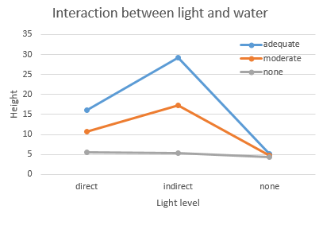
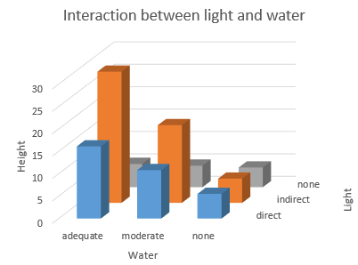
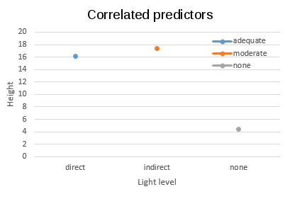
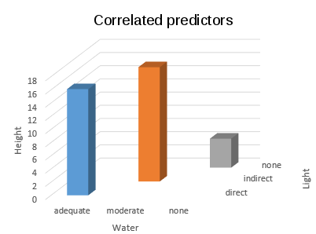

Characterizing interactions between variables is both one of the most powerful aspects of linear modeling, and one of the most easily misunderstood. Today you will conduct an analysis on some contrived data from a plant growth experiment, in which growth is measure for plants that are given different levels of water (no additional water, adequate water) and light (darkness. indirect light, direct light), and watering regime (no additional water, adequate water). Even without doing any analysis, as a biologist it should be obvious that a plant that is given plenty of light and no water will not grow well, and that a plant that is given plenty of water but kept in the dark will not grow well, but a plant given both adequate light and adequate water will grow well. The fact that the response to water depends on how much light the plant is exposed to will give us a textbook example of a statistical interation.
The data are made up, but since the patterns are intuitively obvious to
a biologist, analyzing the data will give you practice interpreting main
effects and interactions in a two-way factorial ANOVA. The focus of this
exercise will be on the correct sequence of steps needed to understand a
particular result, and on the best graphs and numeric summaries for
understanding interactions when they occur.
Analysis of factorial experiments: the general approach
When you are analyzing data that was collected using a factorial design
(with two crossed predictors), the set of steps you should follow is as
follows:
1. Look at the data - make an interaction plot, using one of your
predictors as x-axis labels, and the other predictor as a grouping
variable to produce different lines and/or plot symbols for each factor
level. Use the graph to see if there is any evidence of interaction
between predictor variables. Apparent effects may not prove to be
significant, so be careful not to pre-judge the results until you've
conduced the ANOVA, but this first step helps you anticipate what the
major patterns are so you can recognize them in the numerical output.
2. Run the model, including the interaction between the predictors, and
obtain an ANOVA table.
3. If the overall model is significant, check if the interaction term is significant, and then:
-
If the interaction term is not significant, conduct Tukey tests for any significant main effects. There is no need to test combinations of the two predictors, because the non-significant interaction indicates that the differences among levels of one predictor are independent of the level of the other predictor, and you can interpret them separately.
-
If the interaction term is significant, you will need to take into account the level of one predictor when you interpret the other - do not try to interpret the main effects directly, they can be misleading in the presence of an interaction. You will need to compare means for different combinations of predictors against one another, but this can be done in different ways. The most common approaches are:
- Test for differences between the levels of one predictor, within each level of the other - for example, you can test for differences between the three light levels for plants given adequate light, and for plants given no water, but not do any comparisons between plants that received different water levels. This approach is a choice to leave out some comparisons in order to reduce the amount of correction for multiple comparisons needed.
- Test for differences between all possible combinations of the two predictors. This approach will allow you to compare means for every possible combination of light and water, which is maximally informative, but with so many comparisons to do the power of each test will be fairly low.
Now that you have the general idea, you can try out this approach with some data.
Instructions
The data you will use are in this file. Start a new project in R Studio, import the data into a data set called "plant", and start an R script for your commands.
If you view the data set, you'll see a column for the dependent variable (height), and one each for water and light. Every combination of light level and water level is present, with an equal number of replicates (3) used for each combination - thus, the experiment is complete and balanced, which makes the predictors orthogonal to one another.
1. On your assignment sheet, draw in the results you would expect from this experiment in the blank graph in Question 1A. If the lines cross, converge, or diverge as you move from the left to the right side of the graph that indicates that you should expect an interaction between light and water.
Now, on to the data analysis.
2. First, look at your data. We will use ggplot2 to make an "interaction plot" that uses two different grouping variables and a numeric response. The first grouping variable is plotted on the x-axis, and the second is used for lines that connect means.
First, load the library:
library(ggplot2)
We will need means and standard errors, so use summarySE to get those, and assign them to an object called plant.summ:
plant.summ <- summarySE(plant, measurevar = "height", groups = c("water","light"))
Now you can set up the global settings for your graph with:
plant.gg <- ggplot(plant.summ, aes(x = light, y = mean, color = water, group = water, ymin = mean - se, ymax = mean + se))
A couple of new things to notice here...first, we added a setting in the aes() statement that identifies water as the groups, as well as the colors. We will be adding connecting lines between means for the plot in the next step, and geom_lines() requires that groups be identified. We are also using a calculation for ymin and ymax that uses the mean and se columns in plant.summ, instead of doing the calculations and adding a new column to plant.summ first.
Finally, to get the graph we need to add points, error bars, and line geometric objects to our plant.gg object:
plant.gg + geom_point() + geom_errorbar(width = 0.1) + geom_line()
Using a width statement in geom_errorbar() makes the top of the crossbar narrower and more attractive.
Based on the graph you should have some idea of what is going to happen
when you fit the model - the lines are clearly not parallel, so we have
reason to expect an interaction (provided we have enough statistical
power to detect it).
3. Test the model. The complete model specification would be:
height ~ light + water + light*water
But, linear models are hierarchical, meaning that you can't include an interaction term without also including main effects for both of the factors. As a shorthand for this full specification, then, R allows us to use:
lm(height ~ light*water, data = plant)
4. Generate an ANOVA table, and see whether there is a significant interaction between light and water. This model is balanced and complete, meaning that there are equal numbers of data points in each combination of light and water, and every combination is included in the data set. Because of this, light and water are orthogonal, and it won't matter if you use Type I or Type II sums of squares, so you can get an ANOVA table using either anova() or Anova().
You can plot the interaction using the effects package - load it with:
library(effects)
plot(effect("light*water", plant.lm), multiline=TRUE)
This is essentially the same plot as you made earlier, but effect()
uses the least squares means estimated from the model, which can be
different with unbalanced designs.
5. Now what?
We definitely have an interaction, which means that we can't apply a naive interpretation of the main effects - for example, if we just did Tukey post-hocs on light level, we would get a significant increase in height for indirect light compared to the other two light levels, but this would entirely be due to the high mean when adequate water is provided - if you don't water the plants you don't get this positive effect of indirect light. Given that we are going to have to explain this contingent relationship between water and light, the main effects don't really add anything to our understanding of the biology of the system. To understand what's going on, we need to compare pairs of means for combinations of light and water.
But, which comparisons to make depends on what we really want to know. Let's look at some possible approaches, depending on the question we're interested in answering:
Question 1: what is the best combination of light and water?
We can look at the graph and see that adequate water and indirect light certainly seems to be the best, but we don't know if that combination is significantly different from the others. We should test all of the means against one another, and if indirect light, adequate water is significantly different from all the other combinations we can conclude it's the best.
The simplest method of comparing all the combinations of factor levels to one another in R is to combine the water and light factors into a single factor with six groups (one each for the possible combinations of light and water), and then run a one-way ANOVA with this new merged factor. We can then conduct Tukey post-hocs to see which of the combined levels are different. The interaction() function combines variables for us, so use the command:
plant$light.water <- with(plant, interaction(light, water))
After you're done view the plant data set to see what interaction(light, water) does - there will be a new column called light.water that contains combinations of light and water separated by a period.
You can now use light.water as the predictor in a one-way ANOVA, complete with Tukey post-hocs - you know how to do this, please do so.
This approach is the most information rich, because every pair of means is tested. The problem is that there are six different means, and it takes 15 different comparisons (with 15 p-values) to test all of them. This is an issue because the p-value is adjusted for the number of comparisons, and comparing all of the means against one another reduces the power of each comparison. If you really want to compare all of the combinations, this is just the cost of doing business.
On the other hand, if you are only actually interested in comparing some of the pairs anyway, then testing only a subset of the possible pairs of means is a good idea - you will get increased power for the comparisons that you do. So, for example, if your question is:
Question 2: at each level of water, which light levels are different?
then you can reduce the number of comparisons that you make by more than half. If we only make comparisons between the three light levels that have adequate water, and the three light levels that have no water, we only have to test a total of six differences. Using this approach sacrifices comparisons between water levels, so we can't talk about the differences between water levels when we present our results, but if we already know that watering plants is important and are only interested in how water level and light level interact, then this may be a good choice.
Unfortunately, this is one of the cases in which R makes the relatively simple very difficult - difficult enough, in fact, that we might be tempted to do the wrong analysis because it's easier to accomplish than doing the right analysis. The relatively easy, but wrong, approach is to subset the data into just adequate water and just no water data sets, and run a separate one-way ANOVA on each data set. I'll show you the effect of making the wrong choice as a demonstration (gray box) - read through it and make sure you understand the problem before you move on to the correct way.
The easy (but wrong) way to analyze differences in light level at a given water level
If we do the analysis by splitting the data, we would be working with two different ANOVA tables, one for adequate water:
Response: height
Df Sum Sq Mean Sq F value Pr(>F)
light 2 871.38 435.69 52.825 0.0001552 ***
Residuals 6 49.49 8.25and one for no water:
Response: height
Df Sum Sq Mean Sq F value Pr(>F)
light 2 2.22 1.1100 0.1957 0.8273
Residuals 6 34.04 5.6733
We can do Tukey tests for light levels when adequate water is provided:
Linear Hypotheses:
Estimate Std. Error t value Pr(>|t|)
indirect - direct == 0 13.167 2.345 5.615 0.00310 **
none - direct == 0 -10.900 2.345 -4.648 0.00836 **
none - indirect == 0 -24.067 2.345 -10.263 < 0.001 ***and when no water is provided:
Linear Hypotheses:
Estimate Std. Error t value Pr(>|t|)
indirect - direct == 0 -0.100 1.945 -0.051 0.999
none - direct == 0 -1.100 1.945 -0.566 0.843
none - indirect == 0 -1.000 1.945 -0.514 0.867Seems reasonable, but it's wrong for a couple of reasons. The first reason is that the standard error used in the Tukey tests are different for the two water levels. We're assuming equal variances between the groups, and if this is true we get the best estimate of the amount of random variation in the data when all of the data is included (better estimates from larger sample sizes, don't you know). If you look at the two ANOVA tables for the split data, above, and compare it to the table for the entire data set here:
Response: height
Df Sum Sq Mean Sq F value Pr(>F)
light 2 471.54 235.77 33.872 1.161e-05 ***
water 1 621.87 621.87 89.342 6.561e-07 ***
light:water 2 402.06 201.03 28.881 2.590e-05 ***
Residuals 12 83.53 6.96the residual MS is different for all three, but we expect it to be most accurate for the last table with all the data included.
The other problem is that splitting the data set into two parts causes the Tukey tests to only adjust for the three comparisons within each water level. The reason for doing Tukey tests instead of t-tests on pairs of means is that Tukey adjusts for the number of tests we do, to avoid increasing Type I error rates. We end up doing a total of 6 post-hoc comparisons, so the number we should be adjusting for is 6 - splitting the data fails to control the Type I error rate properly.
So, we need to do this correctly.
The way to get glht() to give us the comparisons we need is to set up "contrast matrices" that specify which means are to be compared with one another. The contrast matrices only make sense in the context of using matrix algebra for the comparisons, which is a little beyond what I expect you to know from your math classes. If you are interested, you can check out this link, which will walk you through what a contrast matrix does, and how to set one up. And, if you're really interested, read this paper explaining how to set up your own custom tests using glht (written by the author of the multcomp package).
I've written a script that does the work of setting up the contrast matrices for you - download this file (right-click and "save target as"). Open it in R Commander and source it to get test.conditional() added to your workspace.
test.conditional() has three arguments: the name of a fitted model object (with a significant interaction), the name of a variable you want to use to subset the data (the "conditional" variable), and the name of a variable whose levels you want to compare with Tukey tests. The function takes these three pieces of information, constructs the needed contrast matrix, and submits it as input to the glht() function. The output you get is the same as if you had used glht() directly, so if you nest the test.conditional() command within a summary() command you will get tests and p-values.
To use the function, you can write the command:
summary(test.conditional(plant.lm, "water", "light"))
You'll see in the output window that you get lines that look like this:
Simultaneous Tests
for General Linear Hypotheses
Fit: lm(formula = height ~ light * water, data = plant)
Linear Hypotheses:
Estimate Std. Error t value Pr(>|t|)
adequate:indirect - direct == 0
13.167 2.154 6.112
< 0.001 ***
adequate:none - direct == 0
-10.900 2.154 -5.060 0.00142
**
adequate:none - indirect == 0
-24.067 2.154 -11.172 < 0.001
***
none:indirect - direct == 0
-0.100 2.154 -0.046
1.00000
none:none - direct ==
0
-1.100 2.154 -0.511
0.98000
none:none - indirect ==
0
-1.000 2.154 -0.464 0.98590
The labeling gives the factor level for water first, followed by a colon, followed by the names of the two light levels that are being tested. The first three lines compare the means for all possible combinations of light level, given adequate water, and the last three give the comparisons given no water. Note that all six comparisons are done here, so the tests are (correctly) adjusting for all six comparisons, and all are using the same standard error taken from the complete ANOVA table.
The command is smart enough to work with either variable set as the conditional variable - try it using light as the conditional and water as the test variable and see what happens.
Interactions vs. correlated predictors
There's a question on your worksheet about the difference between interactions and correlated predictors - before you try to answer it read through this explanation of the issue. It's easier to see the point if we have an equal number of levels in the light and water data set, so the graphs show three levels of water - I added a "moderate" level, which is just halfway between the adequate and none water levels at each light level.
|  |
 |
We set up the design to have all possible combinations of light level and water level, with equal numbers of replicates in each combination (each "cell", to use experimental design terminology). The graphs to the left show the patterns of response in both a (now familiar) interaction plot, and as a three-dimensional bar chart. The interaction plot shows the lack of parallel in responses (i.e. heights) for the combinations of the predictors, but the 3D plot shows the design of the experiment better - you can see that all the combinations of light and water were used, and that the response to one predictor (e.g. light) depends on the other (e.g. water). |
|  |
 |
What if we had used a design that only had the combinations direct.adequate, indirect.moderate, and none.none? You can see on the 3D plot that this introduces a correlation between the predictors that is so severe that the predictors are completely confounded - if you know the water level, you also know the light level. You can no longer tell when a response is due to the water level, the light level, or a combination of the two. |
So, correlated predictors are a problem that makes it difficult to tell how each predictor affects the response variable. Interactions measure the extent to which response to one variable depends on another, and we can't even assess whether interactions exist unless we have enough independent variation between the predictors to measure their joint effects.
That's it - answer the questions on your assignment sheet, and upload R output to the course web site.